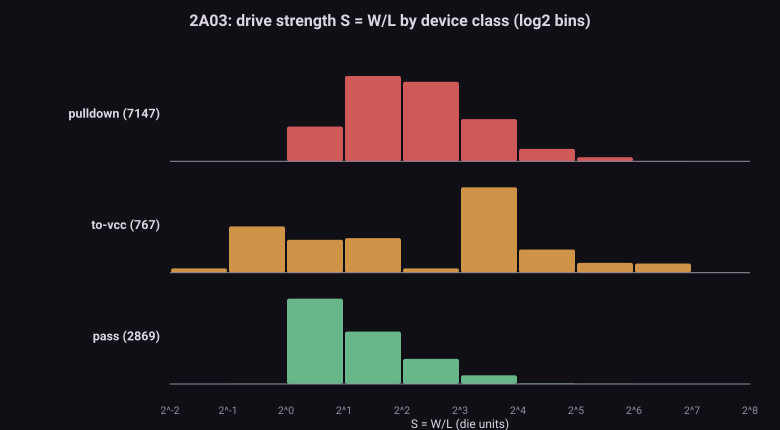
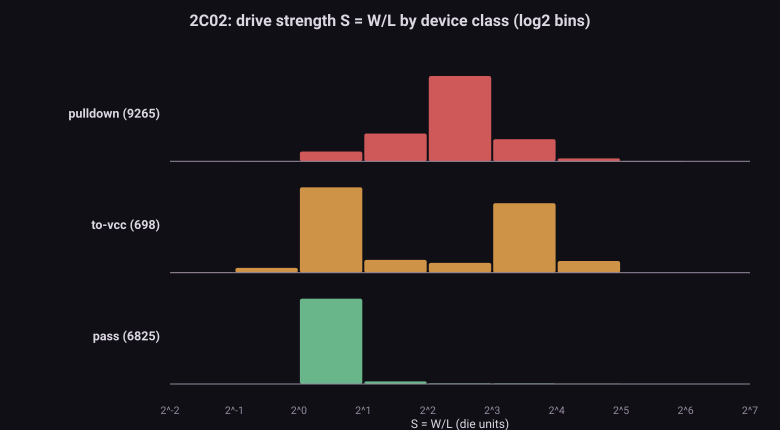
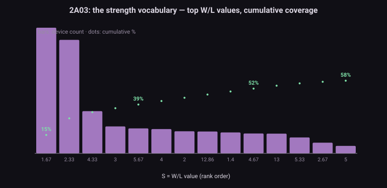
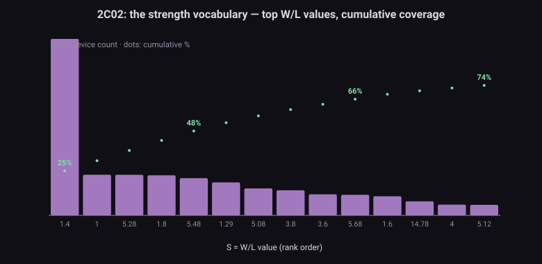
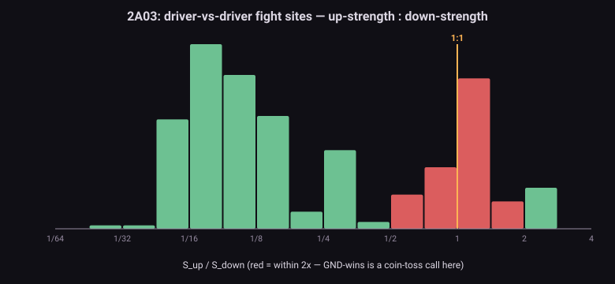
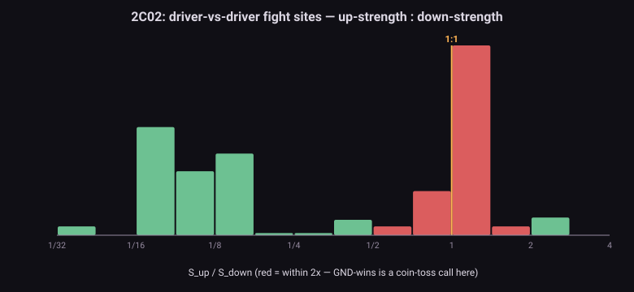

The problem問題 GND wins by fiat, not by physicsGND 靠霸王條款贏,不是靠物理
In the engine's group resolution, priority is absolute: GND path > VCC/pull-up > external drive > hold. It never asks how strong the GND path is. On the die, that question decides real behaviour: the infamous LXA $AB "magic constant" exists because a weak driver and a data latch fight over the merged SB/IDB bus, and the outcome ($FF on this silicon) is a ratioed outcome — a fight between W/L values. Our engine can't express "almost wins", so the accuracy campaign patched it with LxaMagicShim, a hardcoded constant. Same story for the ALU input latches (AluLatchShim). The shims are honest — but they are answers copied from the back of the book.
引擎的群解析優先序是絕對的:GND 路徑 > VCC/上拉 > 外部驅動 > 保持。它從不問那條 GND 路徑有多壯。在晶粒上,這個問題決定真實行為:惡名昭彰的 LXA $AB「magic 常數」,就是一個弱驅動器和一個資料閂鎖在合併的 SB/IDB 匯流排上打架,而結果(這批矽上是 $FF)是一個比例式結果 —— W/L 之間的勝負。我們的引擎表達不了「差一點就贏」,所以精度戰役用 LxaMagicShim 硬寫常數打補丁,ALU 輸入閂鎖(AluLatchShim)同一個故事。這些 shim 很誠實 —— 但它們是抄書後解答的答案。
M1's bet: give every transistor its real strength (from geometry), resolve the rare both-sides-conducting groups by comparing strengths, and the magic constants should fall out of the die instead of being written in. This census is the parameter harvest and the target map for that mechanism.
M1 的賭注:把每顆電晶體的真實強度(從幾何)還給它,罕見的「兩邊同時導通」群改用強度比較裁決,那些 magic 常數就該從晶粒裡自己掉出來,而不是被寫進去。這份普查,就是那個機制的參數收割與目標地圖。
The physics物理 Ratioed logic: W/L is the whole game比例式邏輯:W/L 就是整場比賽
An NMOS transistor is a resistor when on, and its conductance scales as S = W/L — channel width over length. All of ratioed-NMOS design is arithmetic on S: an inverter works because its pull-down (S≈2–4) out-drives its depletion load (S≈0.5–1) by the cookbook factor of ~4:1, leaving a solid logic low. Two drivers of similar S fighting over one node end mid-rail — the next stage's threshold, not a priority list, decides. And strengths compose: devices in series are weaker than their weakest member (the reason a strong driver behind a narrow pass gate loses fights it "should" win — and the reason mechanism M1 will need MOSSIM-II-style strength classes, not exact resistances).
NMOS 電晶體導通時就是一顆電阻,電導正比於 S = W/L —— 通道寬除以長。整個比例式 NMOS 設計就是 S 的算術:反相器能動,是因為下拉管(S≈2–4)以教科書的 ~4:1 壓過 depletion 負載(S≈0.5–1),拉出紮實的低電位。兩個 S 相近的驅動器搶同一個節點,會停在中間電位 —— 由下一級的門檻決定,不是由優先序清單決定。而且強度會複合:串聯器件比最弱的成員更弱(壯驅動器接在窄 pass gate 後面會輸掉「照理該贏」的仗 —— 也是 M1 機制需要 MOSSIM II 式強度分級、而非精確電阻的原因)。
The data資料 The column everyone skipped — and the hole nobody can fill人人跳過的那一欄 —— 和一個沒人能補的洞
Every transdefs row carries a geometry record: ['t11891', gate, c1, c2, bbox, [54, 54, 6, 1, 324], false] — width 54, length 6, gate area 324. That last array is real, per-device data (S = W/L = 9 for this one; its neighbour t12798 is a puny 10/6 ≈ 1.7), and the Visual6502 → MetalNES → S1 lineage never read it. The census computes S = area / L² (robust for bent gates) for all 27,788 devices.
每一列 transdefs 都帶著幾何紀錄:['t11891', gate, c1, c2, bbox, [54, 54, 6, 1, 324], false] —— 寬 54、長 6、閘面積 324。最後那個陣列是真實的逐器件資料(這顆 S = W/L = 9;鄰居 t12798 是瘦小的 10/6 ≈ 1.7),而 Visual6502 → MetalNES → S1 這一脈從來沒讀過它。普查對全部 27,788 顆器件算 S = 面積 / L²(對彎折閘極較穩健)。
'+' node flags, so their W/L is lost. Every pull-up-vs-pull-down ratio has data on one side only. The census turns this around: instead of reading the load strength, it derives it from the die's own design discipline (next section) — the one constant M1 must otherwise calibrate by test.
那個洞:depletion 上拉負載不在 transdefs 裡 —— 抽取時被摺進 segdefs 的 '+' 節點旗標,W/L 就此遺失。所有「上拉 vs 下拉」的比例戰都只有單邊資料。普查把這件事反過來用:不去讀負載強度,而是從晶粒自己的設計紀律反推它(下一節)—— 這正是 M1 原本得靠測試校準的那一個常數。
The script程式 m1_device_census.py — four questionsm1_device_census.py —— 四個問題
- Classes — every device sorted by role: pull-down (a channel end on GND) / to-VCC / pass gate (both ends signals) / always-on tie (gate on VCC) / dead (gate on GND).
- 分類 —— 每顆器件按角色歸位:下拉(通道端接 GND)/ 接 VCC / pass gate(兩端皆訊號)/ 恆通 tie(閘極接 VCC)/ 死管(閘極接 GND)。
- Vocabulary — distinct S values, then the half-octave lattice view: how few discrete strength classes cover the die?
- 詞彙 —— 相異 S 值數量,再用半八度強度格看:幾個離散強度級就能涵蓋整顆晶粒?
- The 4:1 audit — on every
'+'-flagged node with a direct pull-down: are those pull-downs systematically stronger than pass gates (they must overpower a load)? Their modal S ÷ 4 = the die's own estimate of the missing load strength. - 4:1 稽核 —— 每個帶
'+'旗標且有直接下拉的節點:那些下拉管是否系統性強過 pass gate(它們得壓過負載)?其眾數 S ÷ 4 = 晶粒自己給出的「遺失負載強度」估計。 - Fight sites — nodes with both a signal-gated to-VCC device and a signal-gated to-GND device: the places a ratioed fight can physically occur, ranked by how close (S_up : S_dn near 1 = the calls GND-wins gets wrong by fiat).
- 打架地點 —— 同時掛著訊號閘控「接 VCC」器件與「接 GND」器件的節點:比例戰物理上可能發生的地方,按勢均程度排序(S_up : S_dn 接近 1 = GND-必勝條款亂判的案子)。
python m1_device_census.py --transdefs visual2a03-transdefs.js --segdefs visual2a03-segdefs.js \
--nodenames visual2a03-nodenames.js --label 2A03 --outdir out/
# → console report + m1_2A03_summary.json + 3 SVG figuresResults結果 Small lattice, honest 4:1, and 194 close fights小格架、誠實的 4:1、以及 194 場勢均力敵
| 2A03 (CPU+APU) | 2C02 (PPU) | |
|---|---|---|
| transistors電晶體 | 10,916 | 16,872 |
| pull-down / pass / to-VCC下拉 / pass / 接 VCC | 7,147 / 2,869 / 767 | 9,265 / 6,825 / 698 |
| always-on ties / dead恆通 tie / 死管 | 66 / 67 | 38 / 46 |
| distinct S values相異 S 值 | 1,268 | 204 |
| half-octave lattice半八度強度格 | 19 classes · top-8 = 93.3% | 16 classes · top-8 = 95.6% |
| '+' nodes with direct pull-downs帶 '+' 且有直接下拉的節點 | 3,216 | 2,675 |
| median S: loaded pull-downs vs pass gates中位 S:帶載下拉 vs pass gate | 4.33 vs 2.00 (2.17×) | 4.00 vs 1.40 (2.86×) |
| implied depletion-load S (modal ÷ 4)反推負載強度(眾數 ÷ 4) | 0.58 | 0.95 |
| fight sites (within 2×)打架地點(2× 以內) | 288 (80) | 250 (114) |
What the numbers say數字在說什麼
- A small lattice is enough. 19 (CPU) / 16 (PPU) half-octave strength classes cover the dies, with the top 8 covering >93%. Mechanism M1 does not need resistances — a MOSSIM-II-style discrete strength LUT, precomputed at load, is faithful to how the die was actually drawn. (Side find: the PPU uses only 204 distinct geometries vs the CPU's 1,268 — the 2C02 is far more standard-cell-like; the 2A03 is visibly hand-drawn.)
- 小格架就夠。19(CPU)/ 16(PPU)個半八度強度級蓋住整顆晶粒,前 8 級涵蓋 >93%。M1 機制不需要電阻 —— MOSSIM II 式的離散強度 LUT、載入期算好,就忠於晶粒實際的畫法。(順帶發現:PPU 只用 204 種相異幾何,CPU 用 1,268 種 —— 2C02 標準元件化得多,2A03 明顯是手工畫的。)
- The 4:1 law shows up — from the pull-down side. Pull-downs that must overpower a load are systematically ~2.2–2.9× stronger than pass gates, with medians almost exactly at the cookbook "pull-down ≈ 4". Dividing the modal loaded pull-down by 4 gives the missing depletion-load strength: S ≈ 0.58 (CPU) / 0.95 (PPU) — order-1 values, exactly where Mead & Conway put them. That's M1's one free constant, now with a die-derived prior (final calibration anchor: LXA's measured $FF).
- 4:1 定律現身 —— 從下拉側。必須壓過負載的下拉管,系統性比 pass gate 強 ~2.2–2.9×,中位數幾乎正落在教科書的「下拉 ≈ 4」。把帶載下拉的眾數除以 4,得到遺失的負載強度:S ≈ 0.58(CPU)/ 0.95(PPU) —— 都是 1 的量級,恰是 Mead & Conway 擺的位置。M1 唯一的自由常數,現在有了晶粒自產的先驗(最終校準錨:LXA 實測 $FF)。
- The fights have addresses. 538 driver-vs-driver sites, 194 within 2×. On the 2A03: the db0–7 / ab0–15 bus pads, nmi, irq, joy1/joy2 — all the same 7-up/9-down totem idiom at S≈13 : 13, a dead heat by construction. On the 2C02: io_db0–7 (the open-bus family's home node!), ale (the ALERead boss's signal), wr, ext0–3. The census independently rediscovered, from pure geometry, the exact neighbourhoods where the accuracy campaigns spent their hardest months.
- 打架的地方有名有姓。538 個驅動對驅動地點,194 個在 2× 以內。2A03 上:db0–7 / ab0–15 匯流排 pad、nmi、irq、joy1/joy2 —— 全是同一個 7 上管/9 下管的推挽慣用手法,S≈13 : 13,天生勢均力敵。2C02 上:io_db0–7(open-bus 家族的老家!)、ale(ALERead 魔王的訊號)、wr、ext0–3。這份普查只靠幾何,就獨立重新發現了精度戰役耗掉最多個月的那幾個街區。






So what所以呢 What M1 the mechanism now knows in advanceM1 機制現在能預先知道的事
- All parameters precompute. Per-device strength classes (a byte each) come straight from geometry at load time — like M2, the data is a load-time table; unlike M2, there is no prior-mixing: like-for-like W/L needs no assumptions.
- 參數全數前置。每器件強度級(一個 byte)載入期直接從幾何來 —— 和 M2 一樣是載入期表;和 M2 不一樣的是不用混先驗:同類比 W/L 不需要任何假設。
- Fight detection is free. "Both sides conducting" is a specific set of flag combinations — specific entries of the existing 256-entry LUT. Mark those entries as escape-to-strength-resolution; groups that never fight (the overwhelming majority) never pay a cycle.
- 打架偵測免費。「兩邊同時導通」就是特定的旗標組合 —— 現有 256 格 LUT 的特定幾格。把那幾格標成「逃逸到強度裁決」;從不打架的群(壓倒性多數)一個 cycle 都不用付。
- The slow path has a spec. Series chains weaken: resolution inside a fighting group is Bryant's strength-lattice propagation (MOSSIM II, 1984) over the ~19-class vocabulary this census measured — a walk with min/max updates, not a matrix solve.
- 慢路徑有規格可抄。串聯會變弱:打架群內的裁決 = Bryant 強度格傳播(MOSSIM II,1984),跑在本普查量出的 ~19 級詞彙上 —— 一趟帶 min/max 更新的走訪,不是解矩陣。
- One constant, now bounded. The depletion-load strength (S ≈ 0.6–1.0 from the audit) is the only number not in the netlist; LXA's hardware-measured $FF is its calibration anchor — and the retirement test for
LxaMagicShimandAluLatchShim: mechanism on, shim out, isolated ROMs + golden gates green, then the ledger's "retired @" column gets its first commit hash. - 唯一的常數,現在有界。負載強度(稽核給出 S ≈ 0.6–1.0)是唯一不在網表裡的數字;LXA 實測 $FF 是它的校準錨 —— 也是
LxaMagicShim與AluLatchShim的退役考題:機制開、shim 拔、孤立 ROM + 金閘全綠,總帳的「拔除 commit」欄才寫下第一個 hash。
Honest limits誠實極限 What this census cannot say這份普查說不了的事
- One hop only. The fight census sees direct to-VCC / to-GND devices on a node. LXA's actual fight is pass-gate-mediated (drive arriving through the SB/IDB switch network) — finding those needs conduction-aware path analysis, which is the dynamic step (instrumented runs), not this static pass.
- 只看一跳。打架普查看的是節點上的直接接 VCC / 接 GND 器件。LXA 真正的架是經 pass gate 傳來的(驅動穿過 SB/IDB 開關網抵達)—— 要抓這種,需要導通感知的路徑分析,那是動態步驟(儀器化跑),不是這趟靜態掃。
- Candidates, not bugs. The 1:1 pad totems are designed so both gates are never 1 together; a fight site matters only when overlap actually happens (bus turnaround, latch races). The census maps where to look — firing frequency is the dynamic census's job.
- 是候選,不是 bug。1:1 的 pad 推挽是設計好兩閘極永不同時為 1;打架地點要真的發生交疊(匯流排換手、閂鎖賽跑)才要緊。普查畫的是「該往哪看」的地圖 —— 開火頻率是動態普查的工作。
- S = area/L² is an approximation for bent/segmented gates (exact for straight ones); and the audit derives the load constant through a design-law assumption (4:1), not measurement — which is why LXA stays the final calibration anchor.
- S = 面積/L² 是近似(直閘極精確、彎折閘極近似);稽核反推負載常數用的是設計律假設(4:1)、不是量測 —— 所以 LXA 仍是最終校準錨。